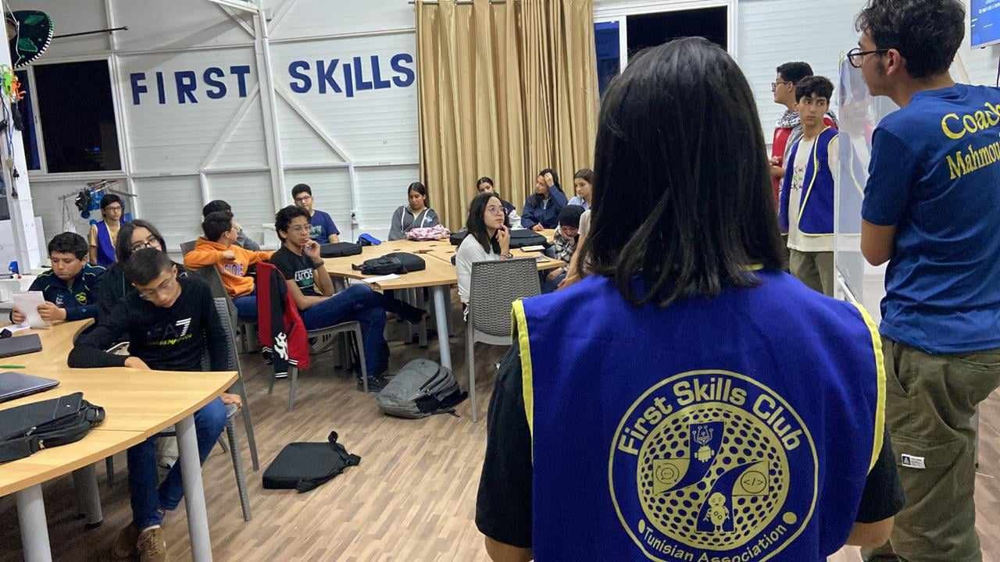
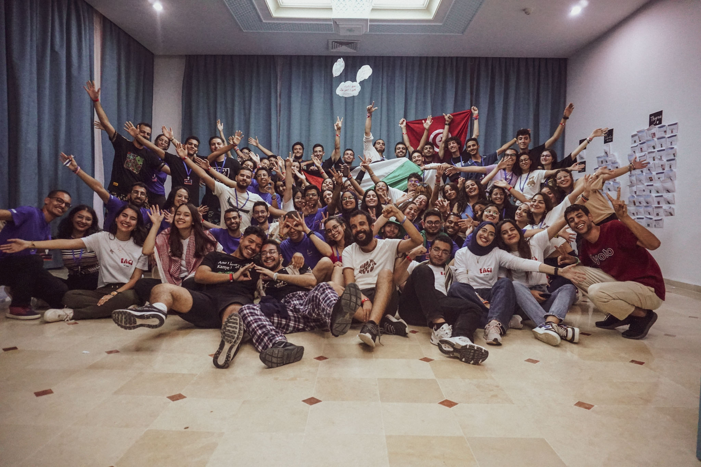
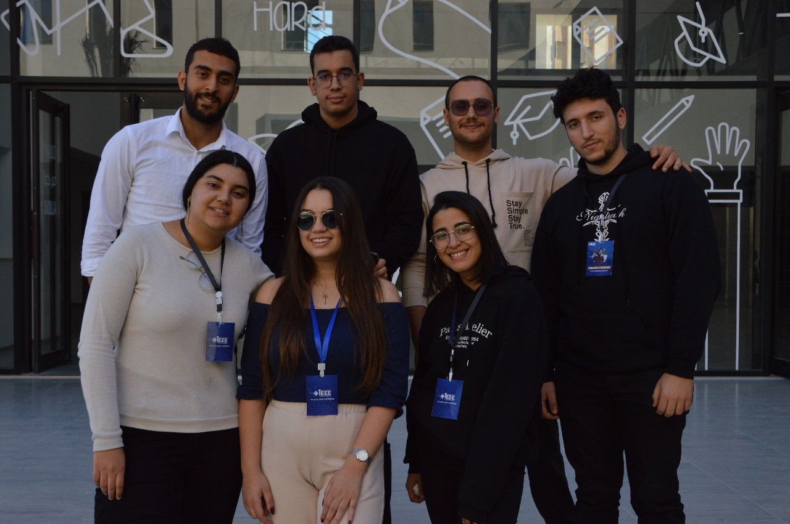
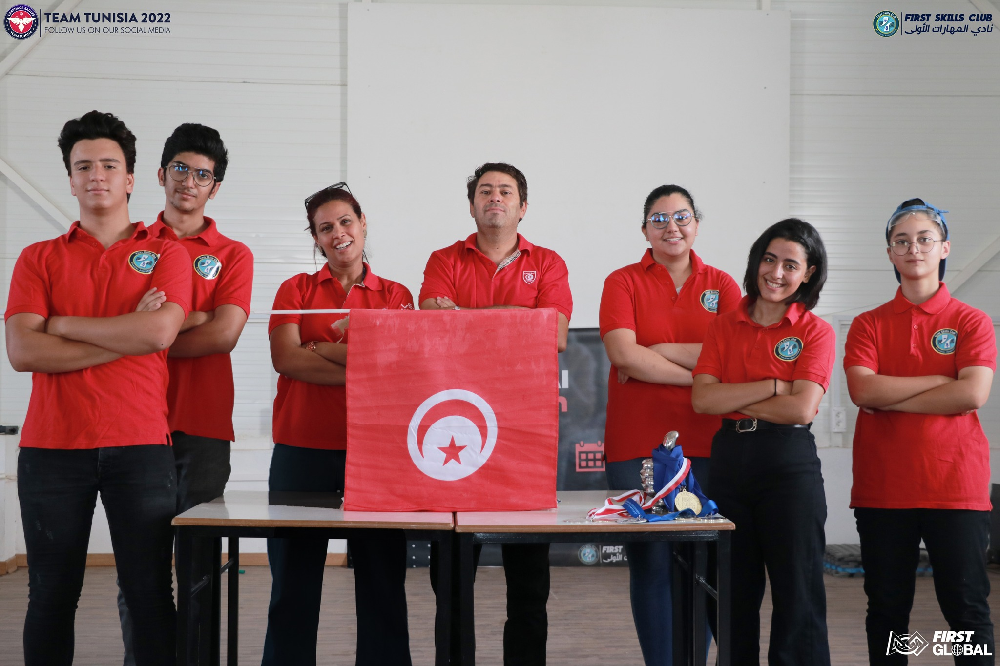

Clubs
Associative life and Clubs
First Skills Club
I have assisted year-long coaching programs in robotics, and communication techniques for 20+ mentees aged 12 to 19 years old, yearly. After following these coaching programs, the mentees developed a strategy of thinking through problems, started using modern technology tools positively,and increased their chances of accessing STEM higher education opportunities.
AIESEC Thyna in Tunisia
Thrilled to announce that I've been selected as an Incoming Global Volunteer IR&Content Team Leader in AIESEC in Tunisia-Thyna for 24.25 term. Excited to lead a dedicated team in contributing to positive change and fostering global connections.
IEEE IIT Student Branch
IEEE is the largest global technical professional organization committed to advancing technology for the betterment of humanity. I'm excited to share my unlocked position as an executive board member in IEEE IIT Student Branch.
First Global Challenge Alumni 2022
I'm thrilled to share that I was selected to be the Team Captain and the Media person of the national Tunisian 🇹🇳 team in the "First Global Challenge" championship was held in Switzerland in 2022! My team is composed of 5 members : Me, Eya,Islem,Mohamed and Mahmoud with two outstanding mentors Mrs Faten Khalfallah Hamouda and Mr Rabah Hamouda.
